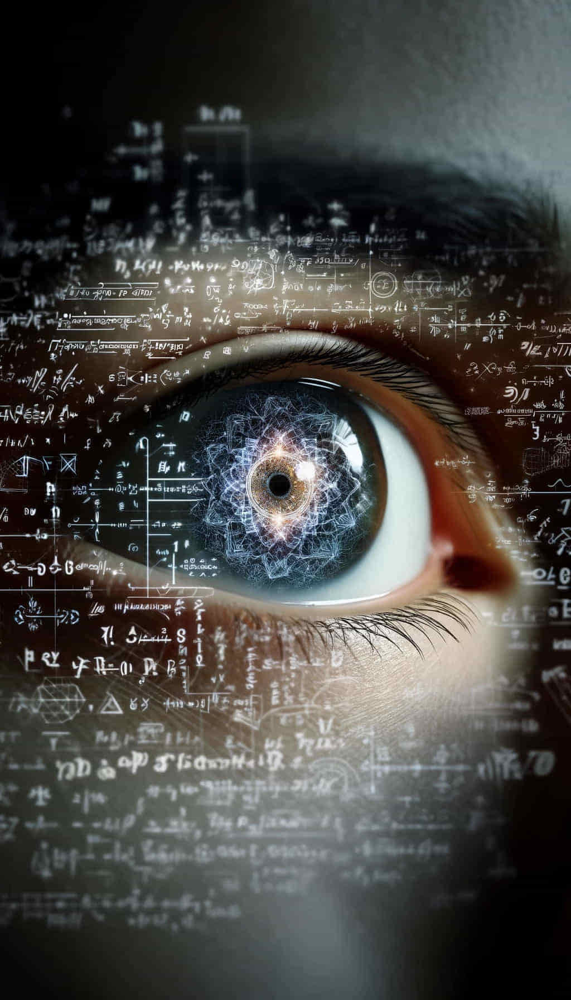

Consciousness Complexity: Bounded Statistical Influence on Quantum Outcomes
Introduction
Consciousness Complexity (CC) is a bounded hypothesis about complex predictive systems and quantum outcome statistics. It proposes that sufficiently organized MPU aggregates, such as biological brains or advanced artificial systems, may weakly bias local `Evolve` probabilities under specific operational conditions.
CC is not the main solution to the measurement problem. Measurement is handled by the universal `Evolve` process, in which an interaction actualizes an outcome relative to a context. CC enters later as a possible small, testable deviation from baseline Born statistics.
Universe 00110000
The Hypothesis in Plain Terms
A loaded die is detected by rolling it thousands of times, never by one roll. Any single six is ordinary. What gives the loading away is a frequency that sits outside what fair dice produce, and only a long run shows it.
The hypothesis here is of that shape. It asks whether a sufficiently organized predictive system, a brain or a comparable artificial system, shifts the frequencies of quantum outcomes near it by a small amount. The shift, if it exists, is bounded, statistical, and visible only across many trials with controls.
Two things it does not claim are worth separating out. It does not say consciousness causes wavefunction collapse; outcomes are produced by the ordinary interaction process whether anyone is watching or not. And it does not permit a message to be sent, because the bound on the effect rules out forcing an outcome, which is what sending would require.
The value of a hypothesis in this shape is that it can be wrong in public. Well-powered null results under adequate controls close the branch, and the framework treats that as the expected outcome unless the effect is found.
The Measurement Problem in Quantum Mechanics
The Measurement Problem is a fundamental issue in quantum mechanics that arises from the apparent incompatibility between the deterministic evolution of quantum states according to the Schrödinger equation and the probabilistic nature of quantum measurement outcomes. In essence, it questions why and how a quantum system, which exists in a superposition of multiple states, collapses into a single definite state upon measurement.
The problem can be summarized as follows: Quantum systems are described by wave functions that evolve deterministically according to the Schrödinger equation. However, when a measurement is performed on a quantum system, the wave function appears to collapse into a single definite state, with probabilities given by the Born (1926) rule. The act of measurement seems to introduce a non-deterministic, irreversible change in the quantum system, which is not accounted for by the Schrödinger equation.
This apparent discrepancy between the continuous, deterministic evolution of quantum states and the discontinuous, probabilistic nature of measurement outcomes has been a source of ongoing debate and investigation in the foundations of quantum mechanics. Various interpretations of quantum mechanics, have been proposed to address the Measurement Problem, but a conclusive resolution remains elusive.
Relation to Consciousness-Collapse Views
Consciousness-collapse views, which run from von Neumann (1955) through Wigner (1961), give consciousness a special role in producing measurement outcomes. Wigner later abandoned the position, and the modern account of why definite records form appeals to interaction with the environment instead (Zurek 2003). The Predictive Universe framework uses a different structure. The `Evolve` process is universal and does not require high-level consciousness. Every measurement-like interaction is a physical update with a probability rule and an interaction context.
CC concerns a narrower question: whether a sufficiently complex predictive aggregate can create a context that slightly biases local outcome probabilities. The effect, if present, is statistical, bounded, and experimentally testable.
Quantifying Consciousness Complexity
To formalize the relationship between consciousness and quantum measurement probabilities, the Consciousness Complexity framework introduces an empirically grounded measure of consciousness complexity (CC). CC is defined as a measure of a system's ability to consistently influence the probabilities of quantum measurement outcomes.
For a given system S, CC should be defined operationally by the size of the probability-modification map induced by the system's context:
CC(S) = ||LS||op
Here LS is a trace-preserving probability-deviation map that sends a baseline quantum state and measurement context to a small deviation ΔP from the Born distribution.
For a two-outcome experiment, the simple difference |Pobs(|1⟩) - PBorn(|1⟩)| serves as an experimental estimator, and the full definition of CC is the operator norm above.
The Role of Consciousness Complexity in Quantum Measurements
The Consciousness Complexity framework proposes that the context of a complex predictive system can weakly modify local outcome probabilities. A compact operational expression is:
Pobserved(i | S, ψ, C) = PBorn(i | ψ) + ΔP(i | S, C)
where PBorn is the standard Born probability and ΔP is a bounded, context-dependent deviation associated with system S in context C.
The deviation must preserve normalization, remain small enough to prevent deterministic endpoint forcing, and be tested statistically across many trials. The bounded-bias branch declares CC below one half, and the framework proves that this excludes forcing both outcomes of a binary event at will. A single outcome cannot establish CC.

Universe 00110000
Implications for Idealism and the Nature of Consciousness
The Consciousness Complexity framework is consistent with the philosophical position of idealism as an epistemic starting point. Conscious awareness remains the first certainty of inquiry. The operational claim is narrower: complex predictive organization may correlate with bounded probability deviations in local quantum statistics.
Experiments of this general kind have been attempted before, and reported positive results have not replicated under independent scrutiny (Radin et al. 2012), which sets the standard any new test has to meet. Correlations of the entangled kind that Bell (1964) analysed have to be excluded as an explanation before a marginal shift counts. CC therefore remains an empirical proposal. Its support depends on reproducible statistical deviations under controlled conditions, and it makes no appeal to consciousness as a direct deterministic cause of measurement outcomes.
Conclusion
The Consciousness Complexity framework presents a bounded, empirical hypothesis: complex predictive aggregates may weakly bias local quantum outcome statistics under specific conditions. The measurement problem is handled by the universal `Evolve` process; CC concerns possible deviations around the baseline probability rule.
This framework is compatible with an idealist epistemic starting point because conscious awareness remains the first certainty of inquiry. The physical claim, however, is operational: CC must be measured through reproducible statistical deviations with adequate controls.
Three branches have to be told apart in any test. On the sealed local branch, where the mechanism acts through completely positive trace-preserving channels on one side, the distant marginal is preserved exactly by the standard no-signaling theorem, and only local statistics and joint correlations visible after classical comparison can change. On a second branch the distant marginal depends on context through common causes in a shared past. Only the third branch, in which the context is chosen by late randomization and the distant marginal still shifts, would establish something outside the current physical description.
References
- Bell, J. S. "On the Einstein Podolsky Rosen Paradox." Physics Physique Fizika 1, no. 3, 1964, 195–200.
- Born, Max. "Zur Quantenmechanik der Stoßvorgänge." Zeitschrift für Physik 37, nos. 11–12, 1926, 863–867.
- Radin, Dean, Leena Michel, Karla Galdamez, Paul Wendland, Robert Rickenbach, and Arnaud Delorme. "Consciousness and the Double-Slit Interference Pattern: Six Experiments." Physics Essays 25, no. 2, 2012, 157–171.
- von Neumann, John. Mathematical Foundations of Quantum Mechanics. Translated by Robert T. Beyer, Princeton University Press, 1955.
- Wigner, Eugene P. "Remarks on the Mind-Body Question." In The Scientist Speculates, edited by I. J. Good, Heinemann, 1961, 284–302.
- Zurek, Wojciech H. "Decoherence, Einselection, and the Quantum Origins of the Classical." Reviews of Modern Physics 75, no. 3, 2003, 715–775.